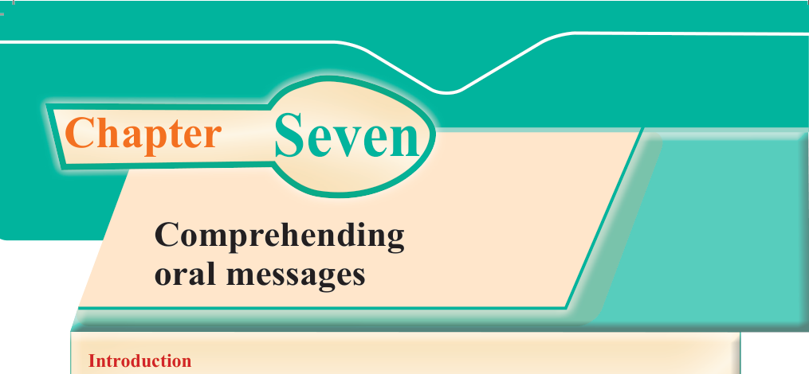
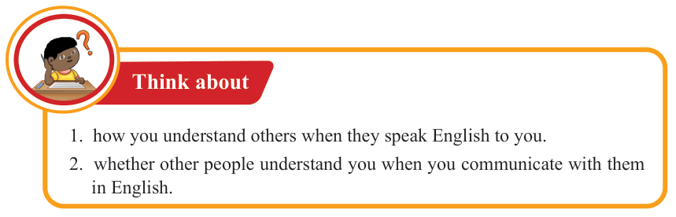
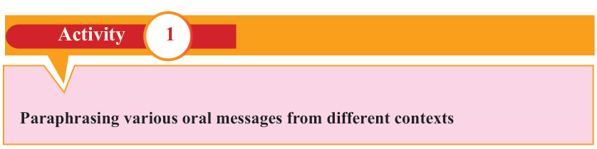
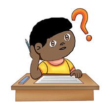

English for Secondary Schools Student’s Book Form One, printed page 100

Chapter Seven
Comprehending oral messages
Introduction
Communication is a two-way traffic. For a message to be transmitted and received correctly, both sides involved in the communication process should effectively comprehend the information. Therefore, comprehending oral messages helps to communicate effectively in different contexts. In this chapter, you will learn to paraphrase and respond to various oral messages from different contexts. Additionally, you will participate in various phone conversations. Furthermore, you will learn to respond to questions about oral messages. The competencies developed will enable you to communicate appropriately in different contexts.

Think about: how you understand others when they speak English to you, and whether other people understand you when you communicate with them in English.Think about
1. how you understand others when they speak English to you.
2. whether other people understand you when you communicate with them in English.

Activity 1
Paraphrasing various oral messages from different contexts

A puzzled learner sits at a desk with one hand raised to an ear and an orange question mark overhead.